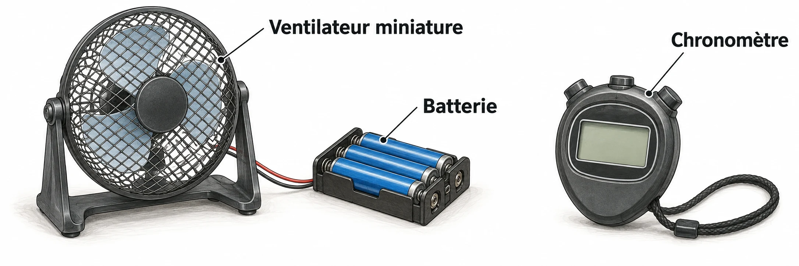

OBSERVER · EXPÉRIMENTER · EXPLIQUER
Une pièce cassée peut se remplacer
Compare des éprouvettes testées dans les mêmes conditions. Prépare le remplacement du support.

✎ Garde ta feuille à côté de toi.Sur le site : manipule et observe. Sur ta feuille : relève les résultats et explique tes choix.
Avant de terminer
Vérifie les numéros des questions, les unités et les résultats de tes essais. Compare ensuite avec la correction.